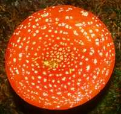
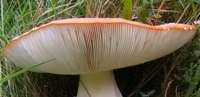
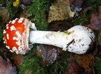

Cap
The cap of Amanita muscaria ranges from 10 to 20cm diameter at maturity; red or occasionally orange (and very rarely a white form is seen: it does not have red spots, although some picture-book Fly Agarics are depicted in this way!). Caps usually flatten or even become slightly concave when fully developed, but occasionally the Fly Agaric remains broadly convex. Caps of the Fly Agaric usually retain irregular, white fragments of the universal veil, but in wet weather they can wash off even while the caps are young and domed. In all but the driest of weather, Amanita muscaria caps flatten at maturity. When damaged, the flesh just below the pellicle (the skin of the cap) of a Fly Agaric is initially white but soon turns yellow on exposure to air.
Gills
Amanita muscaria has white, free, crowded gills that turn pale yellow as the fruitbody matures.
Stem
Fly Agaric stems are 10 to 25cm long and 1.5 to 2cm in diameter; white and ragged with a grooved, hanging white ring. The swollen stem base retains the whiteemains of the sack-like rvolva, which eventually fragments into rings of scales around the base of mature specimens.
